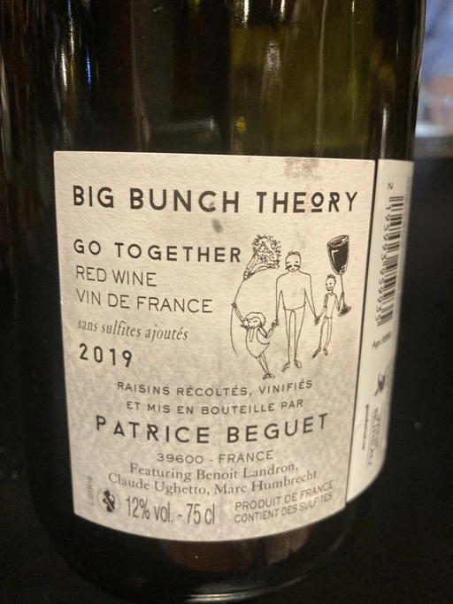
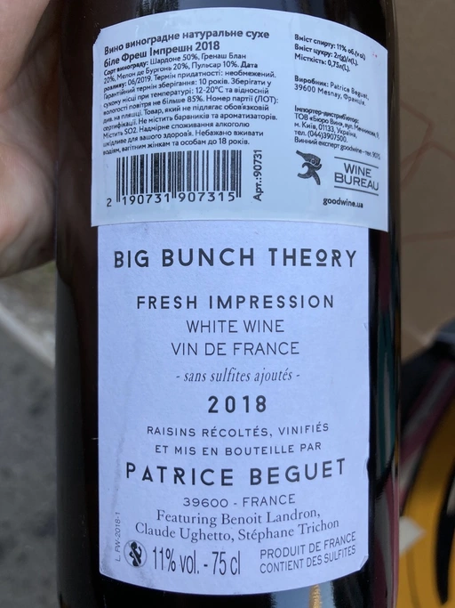
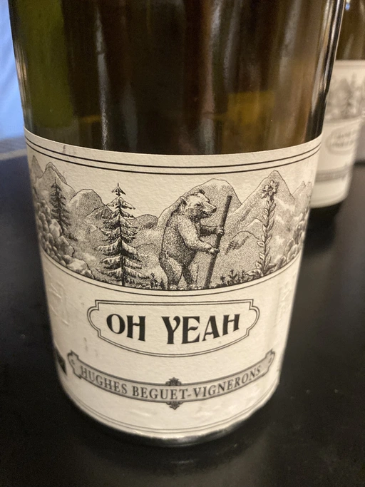
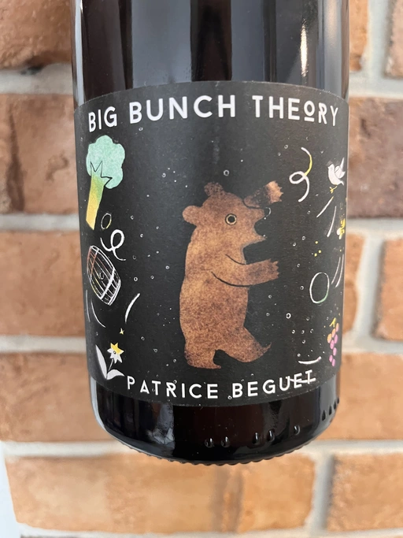
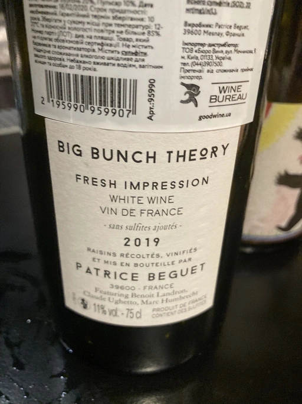
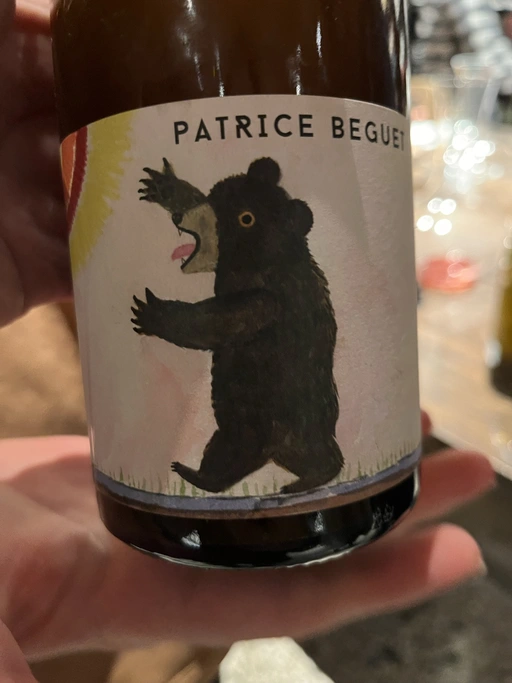
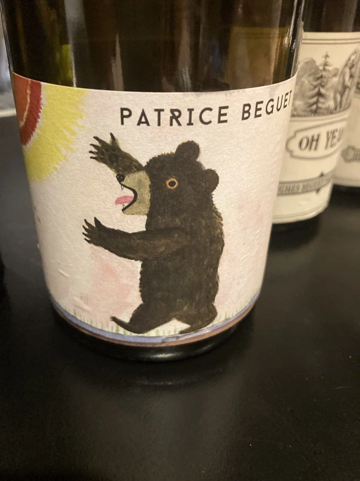

- Type
- Red Still, Dry
- Producer
- Patrice Beguet
- Vintage
- 2020
- Location
- France, Vin de Table
- Grapes
- Poulsard, Trousseau
- Alcohol
- 11
- Sugar
- 2
- Price
- 892 UAH
- Cellar
- N/A
Ratings
2021-08-10 - 7.00
Young and still crazy. Cloudy visually and reductive in ‘bouquet’: toilet, cranberry, fermented raspberry and VA. Easy and very light, but acidity is out of balance, and you get aftertaste full of VA with some fermented red fruits. It has potential (hence such a high rating), but needs a year or more to settle down and improve.
Tasted together with Patrice Beguet in 101 Bar.
Related

Patrice Beguet
Go Together Red - 2019

Patrice Beguet
Go Together Red - 2018

Patrice Beguet
Fresh Impression White - 2018

Patrice Beguet
Oh Yeah - 2020

Patrice Beguet
Big Bunch Theory Fresh Impression Red - 2020

Patrice Beguet
Fresh Impression White - 2019

Patrice Beguet
Three views of a secret - 2021

Patrice Beguet
Three views of a secret - 2020

Spier Wines
Chenin Blanc 21 Gables - 2019